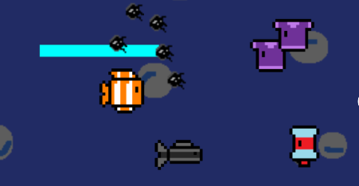
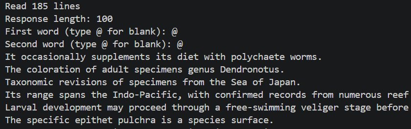
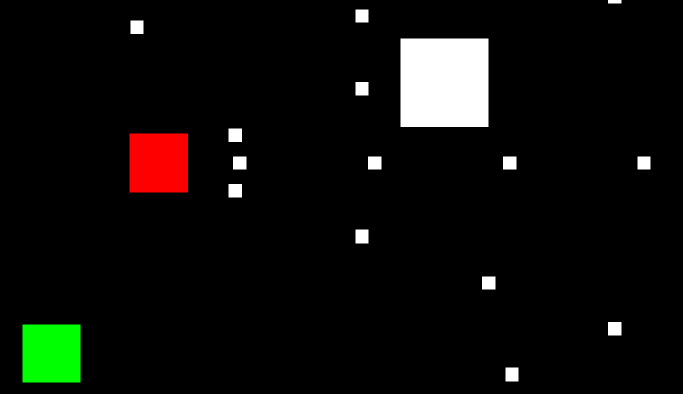
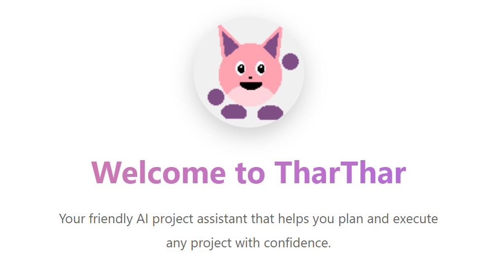
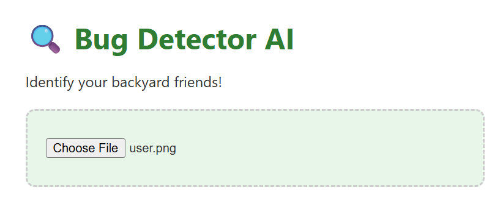
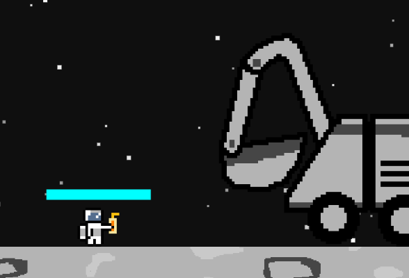

I am a Computer Science student passionate about cybersecurity, software development, artificial intelligence, and marine biology.
View ProjectsI am a Computer Science student aspiring to pursue cybersecurity or software engineering in the future.
To sharpen my cybersecurity skills, I compete in Capture the Flag (CTF) competitions. Additionally, I often create small apps and games to learn more about software development and to learn different languages and tools. Outside of computer science, I enjoy learning about math and science, often incorporating those aspects into my apps.
Download ResumePython, Java, C++, JavaScript
HTML, CSS, p5.js
GitHub, Linux, VS Code
Data Structures, Algorithms, OOP
2D Shoot-Em-Up Game developed for the Computer Science Academy's Better Together Game Jam. One challenge was working with classmates in various grades and skill levels, which helped me learn to work with teams and teach others while a project is ongoing.
Utilizes HTML, CSS, and Javascript with the p5.js library.

Trigram Model trained on sea slug wikipedia articles to output fake sea slug wikipedia articles. One challenge was learning how the language model's probabilities worked and how it chose the next word.
Utilizes Python with the trigram_lm library.

2D Space Shooter game with multiple characters to select and enemies to defeat. One challenge was developing a custom UI with multiple buttons and different screens, which taught me linking elements together and UI design.
Utilizes Java in Processing 4 to learn more about OOP.

AI chatbot that helps plan out projects and creates flowcharts with detailed steps. One challenge was that it was my first time using a LLM wrapper, so I had to learn how to prompt custom LLMs and incorporate the outputs into the program.
Utilizes HTML, CSS, and Javascript with a Gemini wrapper. (Chat no longer works)

AI image detection model that detects different bugs based on uploaded images. One challenge was that the model would sometimes detect the wrong bug, which taught me about training data size and quality for AI development.
Utilizes Python Flask and Google's Teachable Machine.

2D Boss Rush game based after Andy Weir's book Artemis, made for a book report project. One challenge was incorporating all the aspects needed for the book report into the game, which taught me about preplanning projects before starting.
Utilizes HTML, CSS, and Javascript with p5.js library.

Email: devin.j.flanders@gmail.com